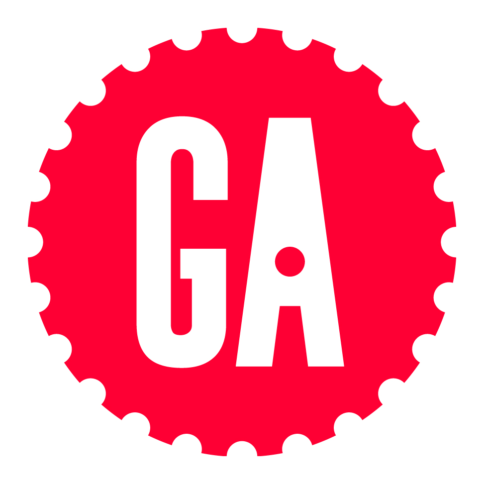

Casandra McDonald
Senior ux / ui designer + Front end Developer
Resume.
Experience
June 2013 – Current
S3 Partners / New York, NY
Lead UX / UI Designer, Front-End Developer
In this role, I established the creative direction for integrating the look and feel of the key software product into a wide range of branding collateral, including logos, web graphics, and business cards. I also developed the UI and website for products, including creating the wireframes used to obtain early buy-in.
- Created UI updates for an finance internal app and application screens.
- Developed websites and landing pages using HTML5, CSS3, and JavaScript and collaborating with Designers and Marketers to align on the website’s vision and marketing strategy.
- Collaborated with Development for the data visualization using Tableau of drill-downs, charts, and financial details.
- Gathered requirements from stakeholders to align on project objectives, conducting the initial research and creating personas.
March 2018 – September 2018
Estee Lauder, Origins / New York, NY
Lead UX / UI Designer, Assistant Global Manager
A key achievement was my collaboration with the Development team, QA, and Testing on all front- and back-end web applications and updates. In addition, I managed the distribution and provided overall direction on all upcoming projects in the pipeline to the Development and Creative teams. To guide this work, I created detailed project specs for all global web projects using JIRA and AHA.
- Gathered requirements through interviews with customers and internal stakeholders to create personas and user journeys by interviewing customers and co-workers.
- Maintained the site, addressing bugs/issues by conducting and coordinating QA with Engineers.
- Rolled out site features, including pages and functionalities to increase site performance and sales.
- Contributed to a collaborative online sales team growing the brand to exceed annual revenue goals by ~9%.
- Increased sales 10% by advising the Global Brand team on best practices for site design and launch of new site.
September 2016 – Current
E.S. Originals / New York, NY
Lead UX / UI Designer, Front-End Developer
In this position, I was able to increase sales 75% by redesigning then integrating an e-commerce platform that allowed users to purchase directly on the brand website. I also provided site strategy and design solutions for company brands. Overall, I saved approximately $100K with site redesigns that moved to a Magento development platform which reduced maintenance fees.
- Interviewed customers, coworkers, and stakeholders to align on a business strategy for user needs.
- Initiated processes establishing UX design using a user-centered design (UCD) approach as the first stage of all web and mobile developments.
- Migrated from Magento to the Shopify platform with a CMS allowing staff to easily update the website.
- Increased site traffic 65% by researching, strategizing, and launching UX improvements.
- Developed all front-end functionality, including JavaScript to allow third-party integration.
October 2014 – January 2016
WorldQuant / New York, NY
Lead UX / UI Designer, Assistant Project Manager
- Redesigned the quantitative finance platform injecting a user experience-centric design into the website and iOS application.
- Managed design, development, and testing with on-site and off-shore developers, reducing project budget 30%.
- Created 25+ wireframes, designs, dashboards, and features into the platform and mobile application.
- Displaced competitors by anticipating user needs to deliver interactive device apps and become the #1 Apple Store quantitative finance app.
- Increased profitability 10% by increasing alpha creations with an improved UX.
Download Full Resume
Skills
Design
- - UX Research
- - Contextual Interviews
- - User Surveys
- - Affinity Mapping
- - Personas
- - Feature Prioritization
- - Sketching
- - Prototyping
- - Wireframes
- - Mobile Design
- - Interface Design
- - Usability Testing
Development
- - HTML 5
- - CSS 3
- - JavaScript
- - MongoDB
- - Express.js
- - React.js
- - Node.js
- - jQuery
- - PHP
- - Responsive Development
- - Bootstrap
- - Wordpress
- - Drupal
Software
- - Photoshop
- - Illustrator
- - XD
- - Jira
- - Aha
- - Atom
- - MAMP
- - PyCharm
- - Git
- - Versions
- - Principle
- - FileZilla
- - Unity
- - Excel
- - Final Cut
Education
2019
General Assembly, multiple certifications in UX, Product Management, Front-end Development, and JavaScript Programming
2008 - 2010
Art Institute of New York City, Associate of Science in Web Design and Multimedia
2006
Central Connecticut State University, Computer Science classes for A+ Certification
AWARDS
Interaction Design Foundation, Outstanding Learner Award, Top 10% Course Taker
My current list of certifications and relevant memberships:
- 
Certification of completion for UX / Product Management / FEWD & JS
Hootsuite Certified Digital Marketer as of May 2019
Certified Scrum Master through Scrum Alliance as of June 2019 until June 2021

IDF Member with 20+ UX / UI Certifications since April 2019
Google Certified in Digital Marketing, Web Designer Basics, and Google Analytics
UXPA International and local member of NY/ CT as of April 2019